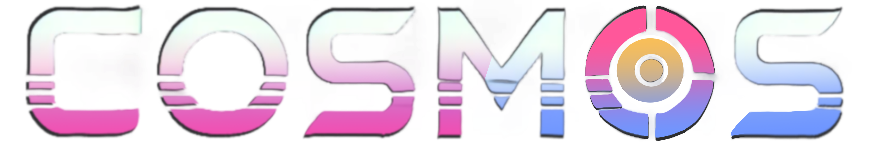

動画
「自由になんでも生成・連勤できる機械」 これがCOSMOSである。 そのCosmosが存在し始めて 世界がどのように変化していくのかをUnityで表している。 未来創造展ではCosmosの力で、 「失われた日本の技術や伝統建築を再表現」 そして 「今はまだ存在しない近未来のサイバー空間を具現化」 させた世界を再現している。


「自由になんでも生成・連勤できる機械」 これがCOSMOSである。 そのCosmosが存在し始めて 世界がどのように変化していくのかをUnityで表している。 未来創造展ではCosmosの力で、 「失われた日本の技術や伝統建築を再表現」 そして 「今はまだ存在しない近未来のサイバー空間を具現化」 させた世界を再現している。
「今はもう失われた日本の伝統建築や技術」 そんなものを再現することができるのがCOSMOSの力である。 そのCosmosが存在したら世界はこのような街並みも 再現できるのではないかという想像をしてみた。 それが和風空間である。
「空飛ぶ車や近未来なサイバー空間」 COSMOSがあればそんな今は存在しないのものや空間も 生み出せるのではと考える。 そんな新らしいものを生み出せるCOSMOSがある世界を具現化したのが サイバー空間である。
50年後、100年後、世界はどうなっているだろう？ 脳波を使って情報を伝達し、 欲しいものや作りたいものが錬金術でなんでも自由に生成できる世界が 実在しているのではないかと考える。 けどそれは今できない。 だから今回は 音声や文字などの情報を与えると、どんなものでもリアルタイムで オブジェクトを生成する機能を作成した。